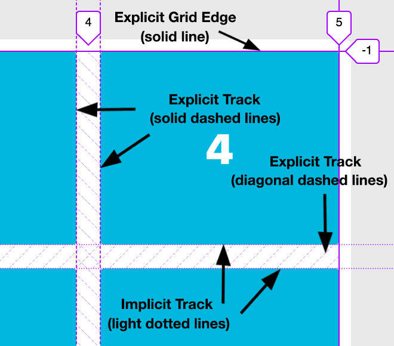

Getting Started with CSS Grid
Dan Robert / @danielwrobert
Beyond The Basics
Placing Grid Items
Standard Approach
.item1 {
grid-column-start: 1;
grid-column-end: 3;
grid-row-start: 1;
grid-row-end: 3;
}
.item10 {
grid-column-start: 1;
grid-column-end: 2;
grid-row-start: 3;
grid-row-end: 4;
}
Shorthand Poperty
.item1 {
grid-column: 1 / 3;
grid-row: 1 / 3;
}
.item10 {
grid-column: 1 / 2;
grid-row: 3 / 4;
}
Result
Beyond The Basics, Part II
Grid Template Areas
The Plan

HTML
Header
Content Area
CSS
.container {
display: grid;
grid-gap: 1.25rem;
grid-template-columns: 200px 1fr;
grid-template-rows: 150px 1fr 100px;
grid-template-areas:
"header header"
"sidebar content"
"footer footer"
height: 75vh;
}
header {
grid-area: header;
}
aside {
grid-area: sidebar;
}
.content {
grid-area: content;
}
footer {
grid-area: footer;
}
Result
Beyond The Basics, Part III
Naming Lines
CSS
.container {
display: grid;
grid-gap: 1.25rem;
grid-template-columns:
[container-start sidebar-start] 200px
[sidebar-end content-start] 1fr
[content-end container-end];
grid-template-rows:
[header-start] 150px
[main-start] 1fr
[footer-start] 100px
[footer-end];
height: 75vh;
}
CSS (continued)
header {
grid-column: container-start / container-end;
grid-row: header-start / main-start;
}
aside {
grid-column: sidebar-start / sidebar-end;
grid-row: main-start / footer-start;
}
.content {
grid-column: content-start / content-end;
grid-row: main-start / footer-start;
}
footer {
grid-column: container-start / container-end;
grid-row: footer-start / footer-end;
}
Result
Dev Tools
Firefox Developer Edition

Grid Line Meanings
References / Resources
- Rachel Andrew / @rachelandrew / gridbyexample.com
- Jen Simmons / @jensimmons / labs.jensimmons.com
- A Book Apart - The New CSS Layout, by Rachel Andrew
- CSS Tricks A Complete Guide to Grid
- MDN Docs
- Mozilla Developer Playground
- Wes Bos's video course on CSS Grid
Thank You!
Dan Robert / @danielwrobert